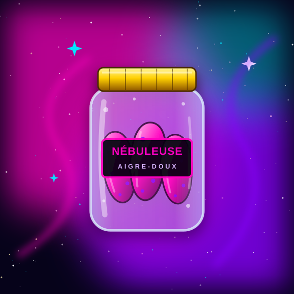
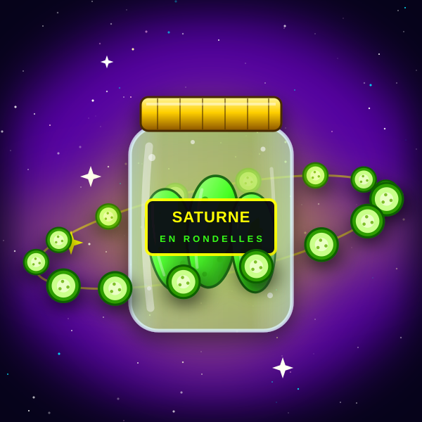
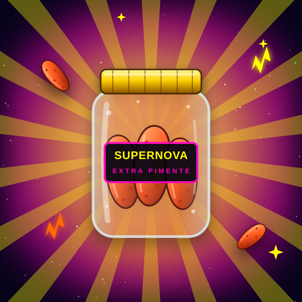

Gravité 0
Des cornichons si légers qu'ils flottent hors du bocal.
19,90 €
Six bocaux venus des quatre coins de la galaxie. Chaque recette a été testée en apesanteur, sous des pluies de météorites et au bord d'un trou noir. Choisissez votre destination.
Des cornichons si légers qu'ils flottent hors du bocal.
19,90 €

Cornichons à l'ail noir, d'une intensité absolue.
24,90 €

Des cornichons aigre-doux aux couleurs d'une nébuleuse.
22,90 €

Des rondelles parfaites, alignées comme les anneaux de Saturne.
17,90 €

L'explosion d'une étoile dans votre bouche.
26,90 €

Une douceur dorée récoltée sous la pleine lune.
29,90 €